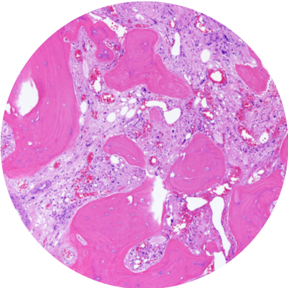

Single-cell genotyping
Methods for connecting somatic mutations with transcriptional and phenotypic programs in the same cells.
Research
We develop single-cell multi-omics technologies and computational methods to decipher cancer development.

Core Approach
Our work asks why similar genetic alterations can produce divergent disease states. We combine experimental and computational approaches to measure molecular variation in individual cells and connect that variation to clonal history and cell identity.
Contact us to learn more about current projects and collaborations.
Methods for connecting somatic mutations with transcriptional and phenotypic programs in the same cells.
Models and measurements that reveal how mutant clones emerge, persist, and transform across hematopoietic states.
Analysis frameworks that integrate multi-omic profiles, lineage structure, and cellular heterogeneity.
Technology
The lab builds and applies approaches that make it possible to study genetic and non-genetic determinants of cancer evolution together, rather than as separate layers.
